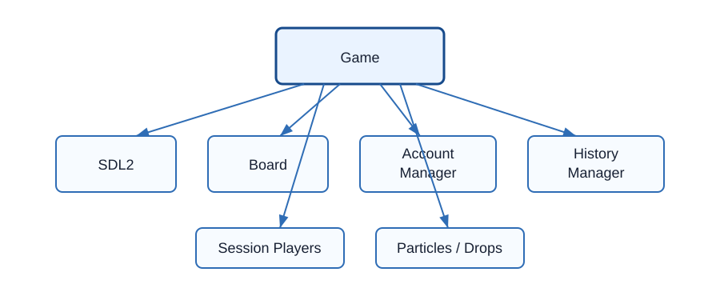
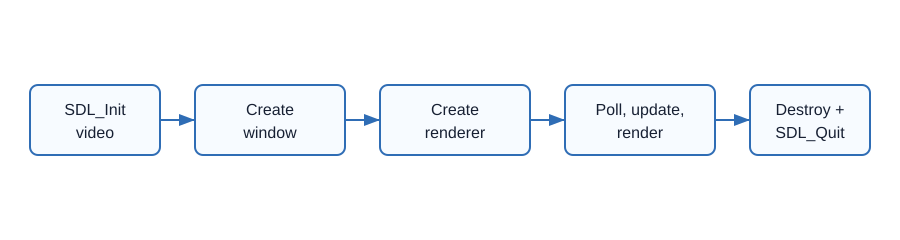
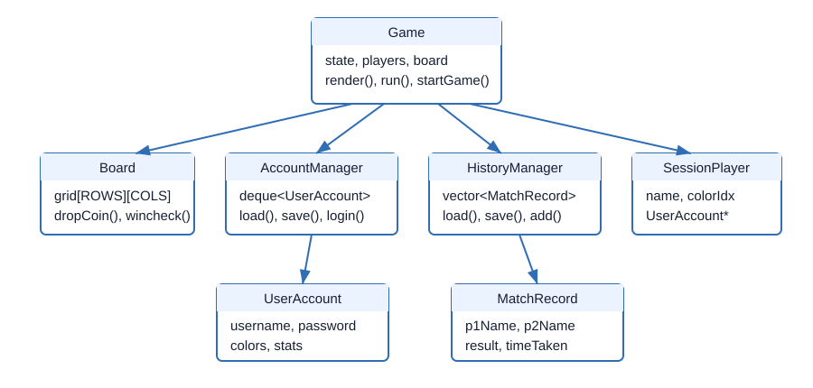
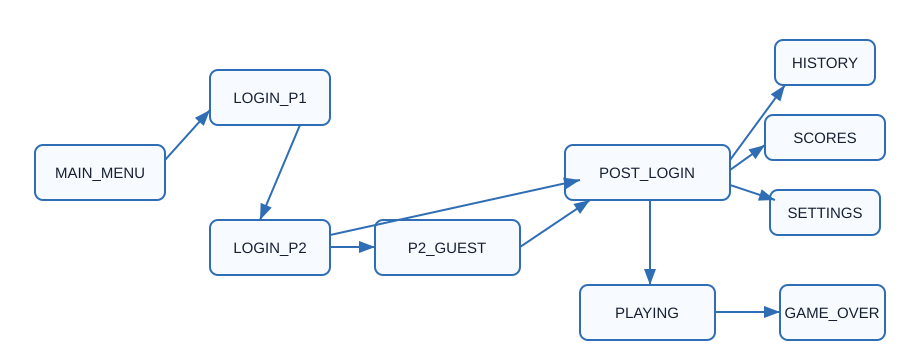
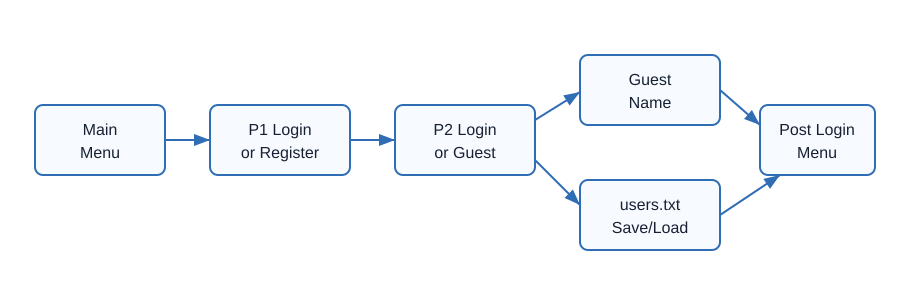
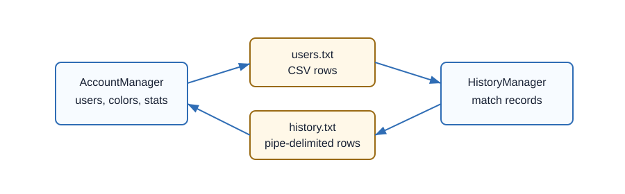
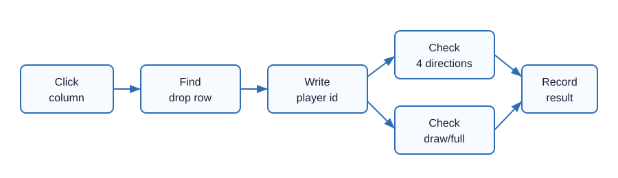
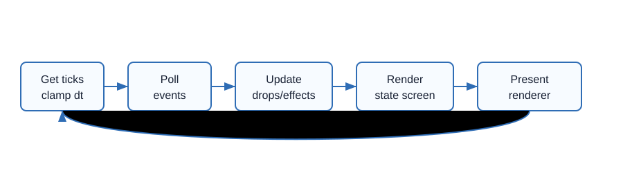
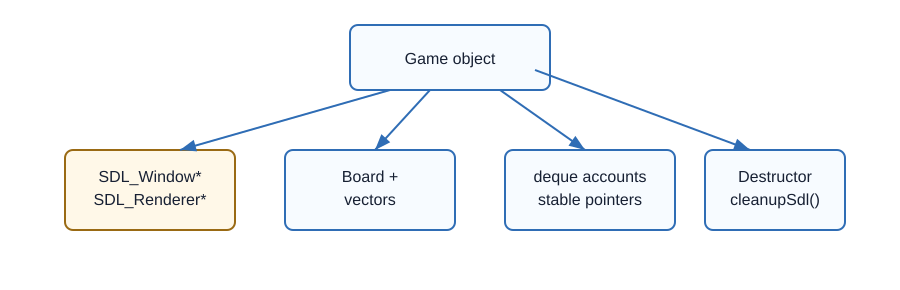

This project is a complete Connect Four game written in C++ using SDL2 for window creation,
input events, drawing, timing, and frame presentation. The program is contained mainly in
ConnectGame.cpp and the project headers. It implements account login/registration, optional guest play for player 2,
match history, high scores, color settings, animated coin drops, particles, and a fullscreen game board.
The game uses a simple object-oriented structure. The Game class owns the SDL handles,
the current screen state, the board, account manager, history manager, active players, particles,
and render/update functions. Smaller classes and structs carry focused responsibilities:
Board owns grid logic, AccountManager owns user records, and
HistoryManager owns saved matches.

SDL2 is the platform layer used by the game. Instead of using operating-system-specific APIs directly, the code asks SDL to create a fullscreen desktop window, create a hardware-accelerated renderer, read keyboard and mouse events, measure time, and present rendered frames.
| SDL Feature | Where It Is Used | Purpose |
|---|---|---|
SDL_Init(SDL_INIT_VIDEO) | Game::Game() | Starts SDL's video subsystem. |
SDL_CreateWindow | Game::Game() | Creates the fullscreen game window. |
SDL_CreateRenderer | Game::Game() | Creates the drawing context used by every render function. |
SDL_PollEvent | Game::run() | Reads input and quit events without blocking the frame loop. |
SDL_GetTicks | Game::run(), match duration | Measures elapsed time for animation and saves completed match duration as MM:SS. |
SDL_RenderFillRect, SDL_RenderDrawLine, points | Drawing helpers | Draws panels, buttons, glyphs, board, rings, and effects. |
SDL_RenderPresent | Game::run() | Displays the completed frame. |
if(SDL_Init(SDL_INIT_VIDEO)!=0)
throw runtime_error(string("SDL_Init failed: ")+SDL_GetError());
window=SDL_CreateWindow("Connect Four",
SDL_WINDOWPOS_CENTERED,SDL_WINDOWPOS_CENTERED,
0,0,SDL_WINDOW_FULLSCREEN_DESKTOP);
renderer=SDL_CreateRenderer(window,-1,
SDL_RENDERER_ACCELERATED|SDL_RENDERER_PRESENTVSYNC);The renderer is central to the whole program. Every shape, text glyph, coin, panel, button, and board cell is drawn manually through SDL drawing calls. There is no external font library: the game defines its own 5 by 7 pixel font and draws it with small filled rectangles.

The game has a neon arcade identity built around a deep space background, electric blue UI borders, and vivid coin colors. These colors are not decorative only; they are part of gameplay because players choose coin colors from the palette and the same selected colors are reused in turn indicators, settings tabs, winner announcements, and coin rendering.
| Brand Element | Color | Purpose in the Game |
|---|---|---|
| Space background | RGB(6, 6, 18) / #060612 | Dark base color used by renderBackground(), making coins and neon UI stand out. |
| Main panel fill | RGB(8, 10, 28) / #080A1C | Used by drawPanel() for menus, login, settings, and overlays. |
| Primary UI blue | RGB(80, 140, 255) / #508CFF | Used for titles, panel borders, glow effects, and main interactive controls. |
| Board blue | RGB(20, 68, 188) / #1444BC | Main physical board color in renderGameBoard(). |
| Board highlight | RGB(55, 108, 228) / #376CE4 | Top board highlight lines and depth accents. |
| Success green | RGB(80, 180, 80) / #50B450 | Login/continue/save buttons and positive actions. |
| Error red | RGB(230, 80, 80) / #E65050 | Error messages and destructive/exit actions. |
struct CoinColor { Uint8 r, g, b; const char* name; };
static const CoinColor PALETTE[] = {
{ 230, 60, 60, "RED" },
{ 235, 200, 40, "YELLOW" },
{ 60, 160, 230, "BLUE" },
{ 60, 210, 80, "GREEN" },
{ 210, 80, 210, "PURPLE" },
{ 240, 140, 30, "ORANGE" },
};The selected color is stored as an index, not as duplicated RGB values. This keeps persistent files small and ensures that rendering always uses the official palette values.
The Visual Studio project builds ConnectGame.cpp, which contains the entry point and includes
game.h. The larger implementation is header-based: game.h includes
board.h and user.h, and those headers share constants and data structures from
common.h. The small board.cpp, game.cpp, and user.cpp
files currently only include their matching headers and are not listed as compile items in
ConnectGame.vcxproj.
| Path | Purpose |
|---|---|
ConnectGame.cpp | Program entry point. Creates Game, runs the main loop, and reports startup exceptions. |
common.h | Shared SDL/C++ includes, board constants, file names, game states, palette, and persistent data models. |
board.h | Header-only Board class for the 7 by 7 grid, drops, draw detection, and win scanning. |
user.h | Header-only account and history managers for users.txt and history.txt. |
game.h | Main SDL window, event loop, state machine, rendering, animation, scoring, and screen logic. |
ConnectGame.vcxproj | Visual Studio C++20 project. The x64 configurations reference SDL2 include and library paths. |
Documentation/ | Project documentation in HTML, DOCX, and PDF forms. The HTML version uses SVG diagrams from Documentation/media. |
The game is organized around composition. Game owns its subsystems directly:
the board, managers, active player objects, and visual effect arrays. This keeps lifetime simple:
when Game is destroyed, its child objects are destroyed automatically, and the SDL
handles are destroyed by cleanupSdl().

| Object | Responsibility |
|---|---|
Game | Main controller. It handles SDL setup, events, screens, rendering, gameplay, animations, and saving results. |
Board | Stores the 7x7 grid and contains all drop, full-board, and win-check logic. |
AccountManager | Loads, saves, registers, and authenticates users. |
HistoryManager | Loads, saves, and appends match records. |
SessionPlayer | Represents the two active players in the current session. It may point to a saved account or represent a guest. |
The board uses int board[ROWS][COLS]. A value of 0 means empty,
1 means player 1, and 2 means player 2. The board is currently 7 by 7,
which is controlled by the ROWS and COLS constants.
class Board {
int board[ROWS][COLS];
public:
Board() { reset(); }
void reset();
bool dropCoin(int col, int player);
int getDropRow(int col) const;
int getCell(int r,int c) const;
bool isFull() const;
bool wincheck(int p) const;
};
The account manager stores UserAccount records in a deque. This is deliberate:
the current session stores pointers to accounts. A vector can move its elements when it grows,
which could leave player pointers invalid after registering a new user. A deque keeps element
addresses stable for normal push-back growth, which is safer for this design.
class AccountManager {
public:
deque<UserAccount> accounts;
void load();
void save();
UserAccount* login(const string& user, const string& pass);
bool registerUser(const string& user, const string& pass);
void saveAccount(const UserAccount& updated);
};
UserAccount is persistent data loaded from disk. SessionPlayer is runtime data
for the current match. A guest player has account == nullptr, so guest results are recorded
in match history but do not update persistent account stats.
struct SessionPlayer {
bool isGuest = true;
string name;
UserAccount* account = nullptr;
int colorIdx = 0;
};
The enum GameState controls which screen is visible and which events matter.
The render loop switches on this enum and calls exactly one screen renderer, except game over,
where it renders the board and then draws the announcement overlay.

switch(state){
case GameState::MAIN_MENU: renderMainMenu(mx,my); break;
case GameState::LOGIN_P1: renderLoginScreen(mx,my); break;
case GameState::LOGIN_P2: renderLoginScreen(mx,my); break;
case GameState::P2_GUEST_NAME: renderGuestName(mx,my); break;
case GameState::POST_LOGIN_MENU: renderPostLoginMenu(mx,my); break;
case GameState::HISTORY: renderHistory(mx,my); break;
case GameState::HIGH_SCORES: renderHighScores(mx,my); break;
case GameState::SETTINGS: renderSettings(mx,my); break;
case GameState::PLAYING: renderGameBoard(dt); break;
case GameState::GAME_OVER: renderGameBoard(dt);
renderAnnouncement(dt); break;
}
The login screen is reused for player 1 and player 2. The variable loginFor
decides whether successful login fills p1 or p2. Player 2 may choose
guest mode, which moves to P2_GUEST_NAME and stores only a display name.

Persistent files are intentionally simple text files:
| File | Format | Used By |
|---|---|---|
users.txt | username,password,p1ColorIdx,p2ColorIdx,wins,losses,draws,total | AccountManager |
history.txt | p1Name|p2Name|result|timeTaken | HistoryManager |
Account names are saved in lowercase. Match history stores display names in lowercase, the result as
P1, P2, or DRAW, and match duration as MM:SS.
Stats are updated only for players backed by a saved account; guest players appear in history but do not
change persistent win/loss/draw totals.

The program draws all UI manually. It has helper functions for panels, buttons, text, input fields, coins, circles, rings, particles, and board cells. This means the UI does not rely on images or font files. The visual style comes from colored rectangles, glow outlines, alpha blending, and a pixel font.
| Function | Purpose |
|---|---|
renderBackground() | Clears the screen and draws animated star pixels. |
drawPanel() | Draws the glowing dark panel used on menus and settings. |
drawButton() | Draws hover-aware menu buttons and button text. |
drawInputField() | Draws labeled username, password, and guest-name fields. |
drawGlyph(), drawText(), drawTextFit() | Render the built-in 5x7 pixel font. |
drawCoin() | Draws a filled circular coin with ring and highlight details. |
renderGameBoard() | Draws the active board, hover coin, falling coins, and turn indicator. |
void drawInputField(const string& label,const string& value,
bool active,bool masked,int x,int y,int w,int h){
Uint8 borderR=active?100:50,borderG=active?180:80,borderB=active?255:140;
SDL_Rect fill={x,y,w,h};
SDL_RenderFillRect(renderer,&fill);
SDL_RenderDrawRect(renderer,&fill);
drawText(label,x,y-22,160,185,225,3,180);
}
The move logic follows Connect Four gravity. When a player clicks a column, getDropRow()
searches upward from the bottom row to find the first empty cell. dropCoin() writes the
player number into that cell. After a successful drop, the game checks for a win, then checks for a draw,
then switches turns if the game is still active.

bool dropCoin(int col, int player) {
for (int r=ROWS-1; r>=0; r--)
if(board[r][col]==0){
board[r][col]=player;
return true;
}
return false;
}
bool wincheck(int p) const {
for(int r=0;r<ROWS;r++) for(int c=0;c<COLS;c++)
if(checkDir(p,r,c,0,1)||checkDir(p,r,c,1,0)||
checkDir(p,r,c,1,1)||checkDir(p,r,c,1,-1)) return true;
return false;
}The four directions are enough because scanning every cell with these forward directions covers every possible line of four: horizontal, vertical, diagonal down-right, and diagonal down-left.
The game separates board state from falling animation. The board is updated immediately when a move is
accepted, but a DroppingCoin record is also added. While the record exists, the coin is drawn
at an interpolated Y position. When the animation reaches the destination, the temporary record is removed.
struct DroppingCoin {
int col,row,player;
float startY,endY,t;
bool done;
};
void updateDropping(float dt){
float speed=dt/0.22f;
for(auto& d:dropping){
if(d.done) continue;
d.t+=speed;
if(d.t>=1.f){ d.t=1.f; d.done=true; }
}
}Particles are short-lived decorative objects. Each one has position, velocity, lifetime, and color. Every frame, velocity and gravity update the position; expired particles are removed by compacting the vector.

The game mostly uses automatic storage and standard containers, which clean themselves. SDL objects are
the main manual resources. They are raw pointers because SDL is a C library. The code centralizes their
cleanup in cleanupSdl(), and the destructor calls that cleanup exactly once.

void cleanupSdl(){
if(renderer){ SDL_DestroyRenderer(renderer); renderer=nullptr; }
if(window){ SDL_DestroyWindow(window); window=nullptr; }
if(sdlReady){ SDL_Quit(); sdlReady=false; }
}
Game(const Game&) = delete;
Game& operator=(const Game&) = delete;The game object is marked non-copyable because copying it would copy SDL pointers. That could cause two objects to try to destroy the same renderer or window. Deleting copy construction and assignment prevents that class of bug at compile time.
deque<UserAccount> instead of vector<UserAccount>
because active players store pointers into the account container. This prevents pointer invalidation when
a new account is registered during the same session.
The checked-in Visual Studio project is the primary build path. It targets C++20, builds
ConnectGame.cpp, and the x64 Debug/Release configurations reference SDL2 from
D:\SDL2-2.32.10. The executable expects SDL2.dll beside it or available on
the system path.
Open ConnectGame.slnx in Visual Studio
Select x64 Debug or x64 Release
Build and run the ConnectGame projectThe same source can be built from a compiler command if SDL2 include and library paths are supplied. The exact flags depend on the local SDL2 installation. A typical MinGW-style command is:
g++ -std=c++20 ConnectGame.cpp -I/path/to/SDL2/include -L/path/to/SDL2/lib -lSDL2main -lSDL2 -o ConnectGame.exe
The Visual Studio Debug output is x64/Debug/ConnectGame.exe. At runtime, the program uses
users.txt and history.txt in the working directory for persistence. If those files
do not exist, the managers start with empty data.
This Connect Four project demonstrates a compact C++ SDL2 game architecture: a central game object, state-based screens, manual UI rendering, persistent users and match history, animated gameplay, and clear ownership cleanup. The core game logic is intentionally small and testable: a 2D integer board, gravity-based column insertion, and four-direction win scanning.